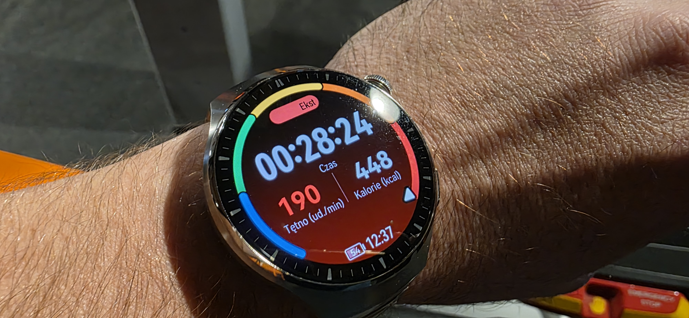
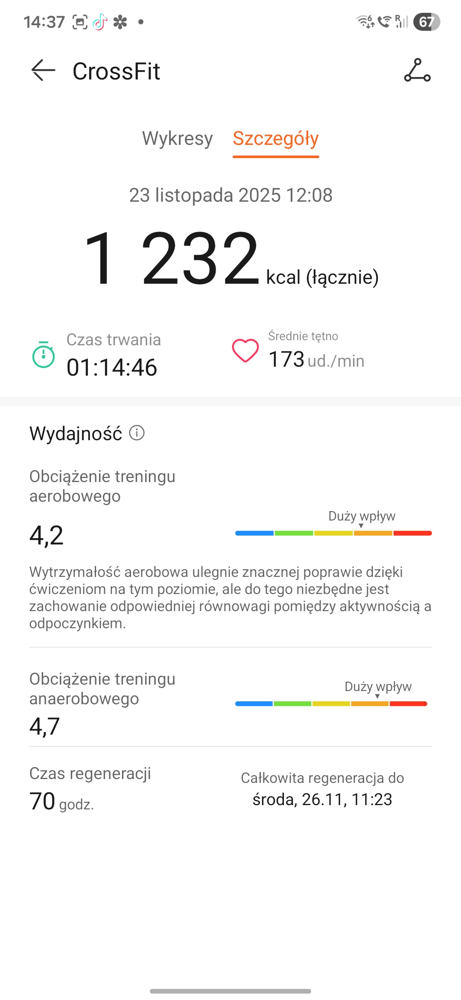

Performance.
Wydolność i siła.
Mój archiwalny wysiłek HYROX, wyniki z zegarka sportowego oraz obecny trening siłowy. Odczyty urządzeń traktuję jako przybliżone.
Aktualny trening →HYROX · czas1:14:46
Tętno śr. podczas wysiłku173 bpm
Tętno max z zapisu192 bpm
Dane deklarowane przez autora na podstawie zapisów treningowych. Przypisywane wyłącznie do opisanej sesji.
Wysiłek w liczbach.
Poniżej zachowane materiały z wcześniejszej strony: wykresy i odczyty z aktywności.


